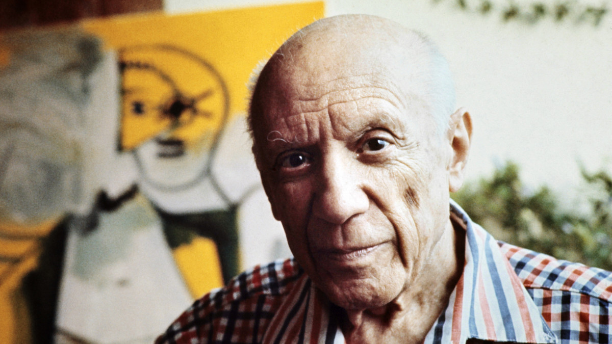

Pablo Picasso
Pablo Picasso is considered to be one of the most famous painters in the twentieth century. He was born in Malaga, Spain on October 20, 1881. In addition to painting, Picasso was also a printmaker, ceramicist, stage designer, poet and playwright. He spent most of his adult life in France.
Picasso showed a passion and a skill for drawing from an early age. According to his mother, his first words were "piz, piz", a shortening of lápiz, the Spanish word for "pencil". From the age of seven, Picasso received formal artistic training from his father in figure drawing and oil painting. On one occasion, the father found his son painting over his unfinished sketch of a pigeon. Observing the precision of his son's technique, the father felt that the thirteen-year-old Picasso had surpassed him, and vowed to give up painting.
Picasso grew up to become one of the greatest and most influential artists of the 20th century, he is known for co-founding the Cubist movement, the invention of constructed sculpture, the co-invention of collage, and for the wide variety of styles that he helped develop and explore. Picasso is now regarded as one of the artists who most defined the revolutionary developments in the plastic arts in the opening decades of the 20th century.
Picasso had affairs with a lot of women and was married twice and had four children, Paulo, Maya, Claude and Paloma by three women. He died on 8 April 1973 in Mougins, France, while he and his wife Jacqueline entertained friends for dinner. He was interred at the Chateau of Vauvenargues near Aix-en-Provence, a property he had acquired in 1958 and occupied with Jacqueline between 1959 and 1962. Jacqueline Roque prevented his children Claude and Paloma from attending the funeral. Devastated and lonely after the death of Picasso, Jacqueline Roque killed herself by gunshot in 1986 when she was 59 years old.
Cubism's next innovation–again, a joint effort between Picasso and Braque–was Synthetic Cubism. Here, the defining characteristic was collage, a technique never before used in fine art; Picasso's "Still Life with Chair Caning" (1912) is the first example. This new method allowed Picasso to play with the bits and pieces of modern life, the handbills and the newspapers and other such detritus of the metropolis, which had never before been satisfactorily incorporated into the visual arts.
Picasso made valuable contributions to art throughout his entire life, but it was the invention of Cubism that secured his immortality. His later work, in a proliferation of styles, from Surrealist to neo-classical, shows that his artistic vitality transcends any one style. Remarkably prolific, no single technique or medium could contain the artist's apparently boundless energy.